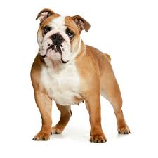
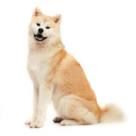
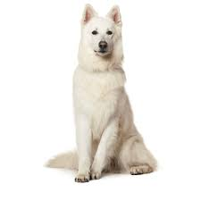
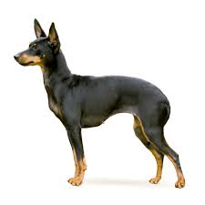
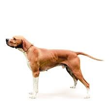

Происхождение и история одомашнивания
Английский бульдог – одна из старейших пород собак, выведенная в процессе селекции. Представители данной породы – активные, сильные и решительные животные. У них плотное телосложение, они довольно широкие и низкорослые.
Голова у собаки породы английский бульдог очень крупная, но пропорциональна телосложению, морда короткая и широкая, слегка вздернутая. У него короткое, крепко сбитое туловище, не склонное к ожирению. Конечности крепкие, мускулистые, очень сильные.
В целом собаку породы английский бульдог можно описать как мощную, но компактную. Несмотря на кажущуюся неповоротливость, она может быть весьма энергичной и быстрой. Эта порода относится к гладкошерстным.
Содержать английского бульдога можно как в загородном доме, так и в квартире, они не требуют особенного ухода. Но стоит хорошо подумать прежде чем завести такого щенка, так как этой породе свойственны многие наследственные заболевания.
Акита-ину, согласно описанию породы, крупная собака крепкого сложения, мощная, хорошо сбалансированная. Она мало лает, но очень внимательна – если подает голос, то не без причины. Этот «крупный шпиц» – редкое сочетание открытости и независимости, сдержанности и умения проявлять инициативу.
Белые швейцарские овчарки по всем своим характеристикам являются пастушьими собаками. Благодаря их белому цвету шерсти, овцы принимали их за соплеменниц, что помогало швейцарцам справляться со своими обязанностями. От своего сородича – немецкой овчарки – отличаются только белоснежным окрасом.
Согласно описанию породы, белые швейцарские овчарки имеют средние размеры и сильное, мускулистое тело. Умеренный костяк обеспечивает элегантные и гармоничные о чертания. Швейцарцы ласковы и послушны, трудолюбивы и энергичны. Они могут быть надежными друзьями и внимательными сторожами.
Само название породы говорит о том, что английский той-терьер соединяет в себе характеристики охотника и маленькой комнатной собаки. Когда-то он был превосходным ловцом крыс и убивал их в огромном количестве. Сегодня порода находится на грани исчезновения.
Пойнтер — активная, выносливая и быстрая легавая, обладающая добрым нравом и известная своей уравновешенностью. В стойке эта собака выглядит чрезвычайно аристократично. Ее силуэт сформирован изящными, чистыми линиями. Собака породы английский пойнтер отличается гармоничным, пропорциональным сложением. Она сильная, ловкая и красивая.
